Front-camera evaluation — corrected CPU capture Status: ready for instructor use · 29 reviewed keyframes · 22 eligible instances. Green: supported target. Blue: camera visible, insufficient LiDAR support. Orange: excluded target.
Classes: car and person; maximum range 60 m. Locations are CARLA bounding-box centers. Default planar tolerances: car 3 m, person 1 m. The geometric point associations are visually checked; they are not semantic LiDAR labels. Prepared by Codex for instructor review and use.
Machine-readable labels · Grading instructions
stationary_00s — 1 eligible Stamp: 12475120533 ns; CARLA frame 336. Original RGB
Parked car and pedestrian on right sidewalk; distant left car obscured by a palm.
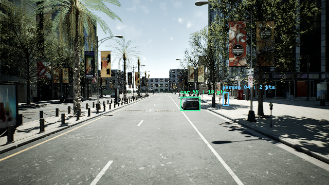
Visibility decisions LiDAR body-support candidates Actor Decision Class Center x / y (m) Support Review note 55 eligible car 22.04 / -3.12 18 Visible car body; RGB shape and CARLA identity checked. 84 ignore person 23.94 / -8.34 2 Visible pedestrian body and legs; RGB inspected at enlarged scale.
All exclusions 88 person: outside_60m_range 86 person: outside_60m_range 53 car: outside_60m_range 54 car: outside_60m_range 56 car: outside_60m_range 57 truck: class_not_evaluated 58 truck: class_not_evaluated 59 truck: class_not_evaluated 60 car: outside_60m_range 61 car: outside_60m_range 84 person: insufficient_lidar_body_support 82 person: outside_60m_range 78 car: outside_60m_range 77 car: outside_60m_range 76 car: outside_60m_range 75 car: outside_60m_range 74 car: outside_60m_range 73 car: outside_60m_range 72 car: outside_60m_range 71 car: outside_60m_range 70 car: outside_60m_range 69 motorcycle: class_not_evaluated 68 car: outside_60m_range 67 truck: class_not_evaluated 66 car: outside_60m_range 65 car: outside_60m_range 64 car: outside_60m_range 63 car: center_outside_front_image 62 car: occluded driving_00s — 1 eligible Stamp: 20025120645 ns; CARLA frame 487. Original RGB
Same clear starting lane; roadside car and pedestrian are visible, with the left car obscured.
Visibility decisions 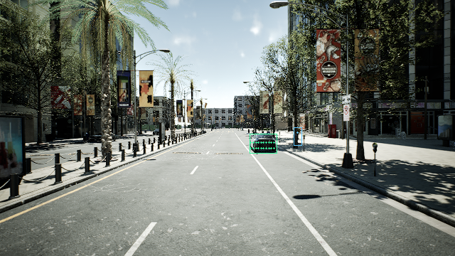
LiDAR body-support candidates Actor Decision Class Center x / y (m) Support Review note 55 eligible car 22.04 / -3.12 56 Visible car body; RGB shape and CARLA identity checked. 84 ignore person 32.54 / -9.55 3 Visible pedestrian body and legs; RGB inspected at enlarged scale.
All exclusions 88 person: outside_60m_range 86 person: outside_60m_range 53 car: outside_60m_range 54 car: outside_60m_range 56 car: outside_60m_range 57 truck: class_not_evaluated 58 truck: class_not_evaluated 59 truck: class_not_evaluated 60 car: outside_60m_range 61 car: outside_60m_range 84 person: insufficient_lidar_body_support 82 person: outside_60m_range 78 car: outside_60m_range 77 car: outside_60m_range 76 car: outside_60m_range 75 car: outside_60m_range 74 car: outside_60m_range 73 car: outside_60m_range 72 car: outside_60m_range 71 car: outside_60m_range 70 car: outside_60m_range 69 motorcycle: class_not_evaluated 68 car: outside_60m_range 67 truck: class_not_evaluated 66 car: outside_60m_range 65 car: outside_60m_range 64 car: outside_60m_range 63 car: center_outside_front_image 62 car: occluded driving_02s — 2 eligible Stamp: 22025120675 ns; CARLA frame 527. Original RGB
Near right car, sidewalk pedestrian and partially occluded left car; distant left car reviewed in enlarged RGB.
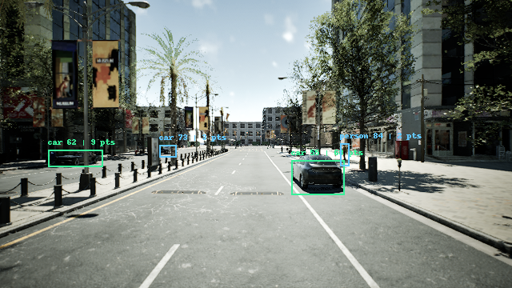
Visibility decisions 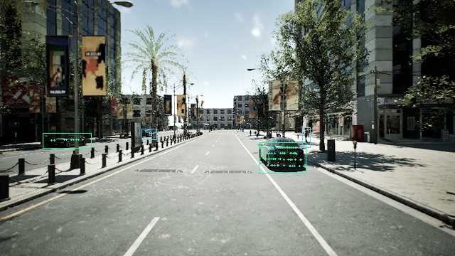
LiDAR body-support candidates Actor Decision Class Center x / y (m) Support Review note 55 eligible car 14.99 / -3.05 68 Visible car body; RGB shape and CARLA identity checked. 62 eligible car 27.95 / 18.29 9 Visible car body; RGB shape and CARLA identity checked. 84 ignore person 28.31 / -9.25 2 Visible pedestrian body and legs; RGB inspected at enlarged scale. 73 ignore car 52.99 / 17.89 3 Visible car body; RGB shape and CARLA identity checked.
All exclusions 88 person: outside_60m_range 86 person: outside_60m_range 53 car: outside_60m_range 54 car: outside_60m_range 56 car: outside_60m_range 57 truck: class_not_evaluated 58 truck: class_not_evaluated 59 truck: class_not_evaluated 60 car: outside_60m_range 61 car: outside_60m_range 84 person: insufficient_lidar_body_support 82 person: outside_60m_range 78 car: outside_60m_range 77 car: outside_60m_range 76 car: outside_60m_range 75 car: outside_60m_range 74 car: outside_60m_range 73 car: insufficient_lidar_body_support 72 car: outside_60m_range 71 car: outside_60m_range 70 car: outside_60m_range 69 motorcycle: class_not_evaluated 68 car: outside_60m_range 67 truck: class_not_evaluated 66 car: outside_60m_range 65 car: outside_60m_range 64 car: outside_60m_range 63 car: center_outside_front_image driving_03s — 1 eligible Stamp: 23025120690 ns; CARLA frame 547. Original RGB
Substantial side and rear of the near car remain visible despite clipping; pedestrian on right sidewalk.
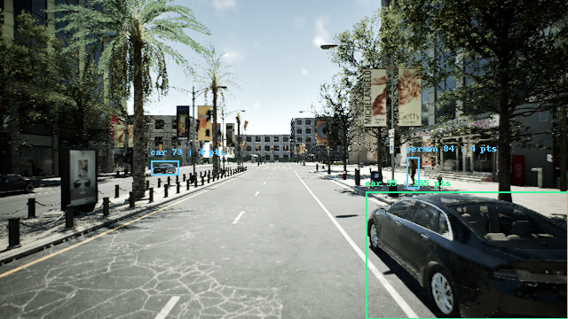
Visibility decisions 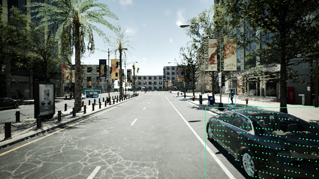
LiDAR body-support candidates Actor Decision Class Center x / y (m) Support Review note 55 eligible car 6.76 / -3.01 255 Visible car body; RGB shape and CARLA identity checked. 84 ignore person 21.49 / -9.08 4 Visible pedestrian body and legs; RGB inspected at enlarged scale. 73 ignore car 44.69 / 18.04 4 Visible car body; RGB shape and CARLA identity checked.
All exclusions 88 person: outside_60m_range 86 person: outside_60m_range 53 car: outside_60m_range 54 car: outside_60m_range 56 car: outside_60m_range 57 truck: class_not_evaluated 58 truck: class_not_evaluated 59 truck: class_not_evaluated 60 car: outside_60m_range 61 car: outside_60m_range 84 person: insufficient_lidar_body_support 82 person: outside_60m_range 78 car: outside_60m_range 77 car: outside_60m_range 76 car: outside_60m_range 75 car: outside_60m_range 74 car: outside_60m_range 73 car: insufficient_lidar_body_support 72 car: outside_60m_range 71 car: outside_60m_range 70 car: outside_60m_range 69 motorcycle: class_not_evaluated 68 car: outside_60m_range 67 truck: class_not_evaluated 66 car: outside_60m_range 65 car: outside_60m_range 64 car: outside_60m_range 63 car: center_outside_front_image 62 car: center_outside_front_image driving_03.5s — 0 eligible Stamp: 23525120697 ns; CARLA frame 557. Original RGB
Left parked car visible. Lamp post obscures the pedestrian. Only a small fragment of the passed right car remains at the image edge.
Visibility decisions 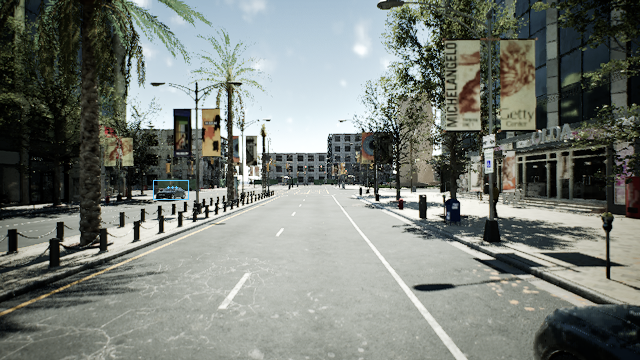
LiDAR body-support candidates Actor Decision Class Center x / y (m) Support Review note 73 ignore car 40.55 / 18.08 4 Visible car body; RGB shape and CARLA identity checked.
All exclusions 88 person: outside_60m_range 86 person: outside_60m_range 53 car: outside_60m_range 54 car: outside_60m_range 55 car: center_outside_front_image 56 car: outside_60m_range 57 truck: class_not_evaluated 58 truck: class_not_evaluated 59 truck: class_not_evaluated 60 car: outside_60m_range 61 car: outside_60m_range 84 person: occluded 82 person: outside_60m_range 78 car: outside_60m_range 77 car: outside_60m_range 76 car: outside_60m_range 75 car: outside_60m_range 74 car: outside_60m_range 73 car: insufficient_lidar_body_support 72 car: outside_60m_range 71 car: outside_60m_range 70 car: outside_60m_range 69 motorcycle: class_not_evaluated 68 car: outside_60m_range 67 truck: class_not_evaluated 66 car: outside_60m_range 65 car: outside_60m_range 64 car: outside_60m_range 63 car: center_outside_front_image 62 car: center_outside_front_image driving_04s — 2 eligible Stamp: 24025120705 ns; CARLA frame 567. Original RGB
Pedestrian clearly visible beside the mailbox; parked car visible across the road.
Visibility decisions 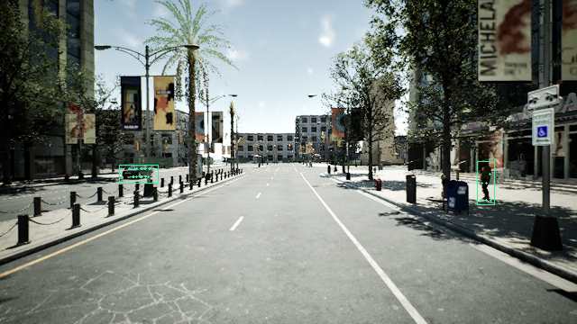
LiDAR body-support candidates Actor Decision Class Center x / y (m) Support Review note 84 eligible person 14.67 / -8.95 6 Visible pedestrian body and legs; RGB inspected at enlarged scale. 73 eligible car 36.45 / 18.10 18 Visible car body; RGB shape and CARLA identity checked.
All exclusions 88 person: outside_60m_range 86 person: outside_60m_range 53 car: outside_60m_range 54 car: outside_60m_range 55 car: center_outside_front_image 56 car: outside_60m_range 57 truck: class_not_evaluated 58 truck: class_not_evaluated 59 truck: class_not_evaluated 60 car: outside_60m_range 61 car: outside_60m_range 82 person: outside_60m_range 78 car: outside_60m_range 77 car: outside_60m_range 76 car: outside_60m_range 75 car: outside_60m_range 74 car: center_outside_front_image 72 car: outside_60m_range 71 car: outside_60m_range 70 car: outside_60m_range 69 motorcycle: class_not_evaluated 68 car: outside_60m_range 67 truck: class_not_evaluated 66 car: outside_60m_range 65 car: outside_60m_range 64 car: outside_60m_range 63 car: center_outside_front_image 62 car: center_outside_front_image driving_04.5s — 2 eligible Stamp: 24525120712 ns; CARLA frame 577. Original RGB
Close pedestrian visible beside the mailbox, with some lower-body occlusion; distant pedestrian and left parked car also inspected.
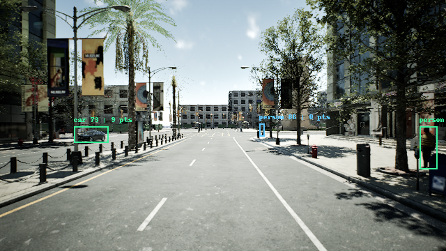
Visibility decisions 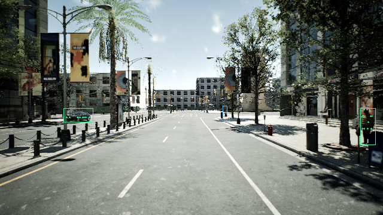
LiDAR body-support candidates Actor Decision Class Center x / y (m) Support Review note 84 eligible person 11.23 / -8.90 10 Visible pedestrian body and legs; RGB inspected at enlarged scale. 73 eligible car 32.30 / 18.11 9 Visible car body; RGB shape and CARLA identity checked. 86 ignore person 55.99 / -9.35 0 Visible pedestrian body and legs; RGB inspected at enlarged scale.
All exclusions 88 person: outside_60m_range 86 person: insufficient_lidar_body_support 53 car: outside_60m_range 54 car: outside_60m_range 55 car: center_outside_front_image 56 car: outside_60m_range 57 truck: class_not_evaluated 58 truck: class_not_evaluated 59 truck: class_not_evaluated 60 car: outside_60m_range 61 car: outside_60m_range 82 person: outside_60m_range 78 car: outside_60m_range 77 car: outside_60m_range 76 car: outside_60m_range 75 car: outside_60m_range 74 car: center_outside_front_image 72 car: outside_60m_range 71 car: outside_60m_range 70 car: outside_60m_range 69 motorcycle: class_not_evaluated 68 car: outside_60m_range 67 truck: class_not_evaluated 66 car: outside_60m_range 65 car: outside_60m_range 64 car: outside_60m_range 63 car: center_outside_front_image 62 car: center_outside_front_image driving_05s — 1 eligible Stamp: 25025120720 ns; CARLA frame 587. Original RGB
Clear left parked car and distant sidewalk pedestrian.
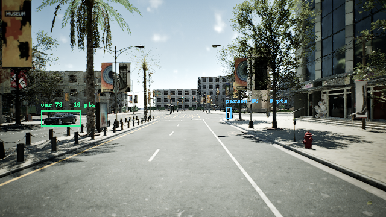
Visibility decisions 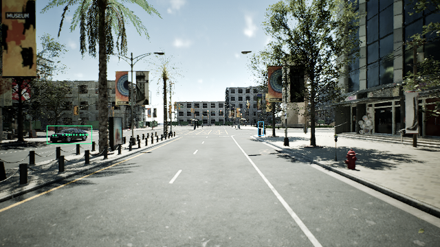
LiDAR body-support candidates Actor Decision Class Center x / y (m) Support Review note 73 eligible car 28.18 / 18.11 16 Visible car body; RGB shape and CARLA identity checked. 86 ignore person 52.57 / -9.29 0 Visible pedestrian body and legs; RGB inspected at enlarged scale.
All exclusions 88 person: outside_60m_range 86 person: insufficient_lidar_body_support 53 car: outside_60m_range 54 car: outside_60m_range 55 car: center_outside_front_image 56 car: outside_60m_range 57 truck: class_not_evaluated 58 truck: class_not_evaluated 59 truck: class_not_evaluated 60 car: outside_60m_range 61 car: outside_60m_range 84 person: center_outside_front_image 82 person: outside_60m_range 78 car: outside_60m_range 77 car: outside_60m_range 76 car: outside_60m_range 75 car: outside_60m_range 74 car: center_outside_front_image 72 car: outside_60m_range 71 car: outside_60m_range 70 car: outside_60m_range 69 motorcycle: class_not_evaluated 68 car: outside_60m_range 67 truck: class_not_evaluated 66 car: outside_60m_range 65 car: outside_60m_range 64 car: outside_60m_range 63 car: outside_60m_range 62 car: center_outside_front_image driving_06s — 0 eligible Stamp: 26025120734 ns; CARLA frame 607. Original RGB
Advertising panel obscures the left car; distant right-side pedestrian remains visible.
Visibility decisions 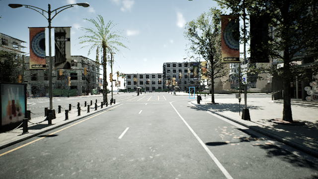
LiDAR body-support candidates Actor Decision Class Center x / y (m) Support Review note 86 ignore person 45.93 / -9.21 0 Visible pedestrian body and legs; RGB inspected at enlarged scale.
All exclusions 88 person: outside_60m_range 86 person: insufficient_lidar_body_support 53 car: outside_60m_range 54 car: outside_60m_range 55 car: center_outside_front_image 56 car: outside_60m_range 57 truck: class_not_evaluated 58 truck: class_not_evaluated 59 truck: class_not_evaluated 60 car: outside_60m_range 61 car: outside_60m_range 84 person: center_outside_front_image 82 person: outside_60m_range 78 car: outside_60m_range 77 car: outside_60m_range 76 car: outside_60m_range 75 car: outside_60m_range 74 car: center_outside_front_image 73 car: occluded 72 car: outside_60m_range 71 car: outside_60m_range 70 car: outside_60m_range 69 motorcycle: class_not_evaluated 68 car: outside_60m_range 67 truck: class_not_evaluated 66 car: outside_60m_range 65 car: outside_60m_range 64 car: outside_60m_range 63 car: outside_60m_range 62 car: center_outside_front_image driving_08s — 0 eligible Stamp: 28025120764 ns; CARLA frame 647. Original RGB
Distant pedestrian on the right sidewalk, inspected in enlarged RGB.
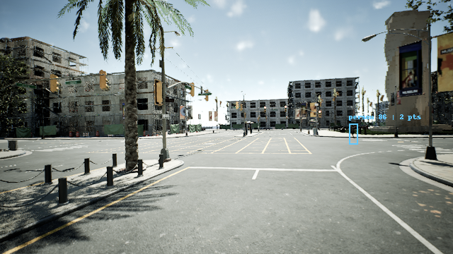
Visibility decisions 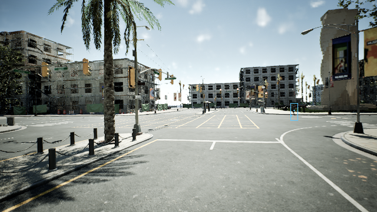
LiDAR body-support candidates Actor Decision Class Center x / y (m) Support Review note 86 ignore person 32.65 / -17.42 2 Visible pedestrian body and legs; RGB inspected at enlarged scale.
All exclusions 88 person: outside_60m_range 86 person: insufficient_lidar_body_support 53 car: outside_60m_range 54 car: outside_60m_range 55 car: center_outside_front_image 56 car: outside_60m_range 57 truck: class_not_evaluated 58 truck: class_not_evaluated 59 truck: class_not_evaluated 60 car: outside_60m_range 61 car: outside_60m_range 84 person: center_outside_front_image 82 person: outside_60m_range 78 car: outside_60m_range 77 car: outside_60m_range 76 car: outside_60m_range 75 car: center_outside_front_image 74 car: center_outside_front_image 73 car: center_outside_front_image 72 car: outside_60m_range 71 car: outside_60m_range 70 car: outside_60m_range 69 motorcycle: class_not_evaluated 68 car: outside_60m_range 67 truck: class_not_evaluated 66 car: outside_60m_range 65 car: outside_60m_range 64 car: outside_60m_range 63 car: outside_60m_range 62 car: center_outside_front_image driving_10s — 0 eligible Stamp: 30025120794 ns; CARLA frame 687. Original RGB
Pedestrian visible across the intersection on the right sidewalk.
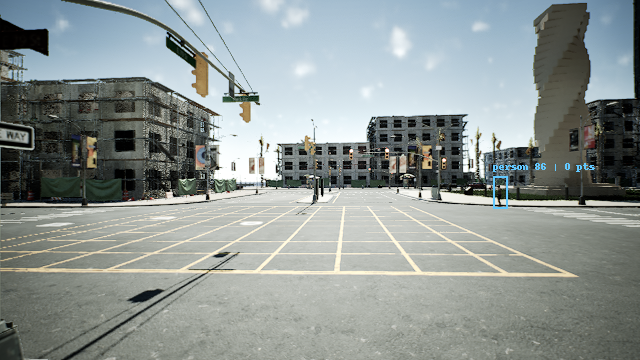
Visibility decisions 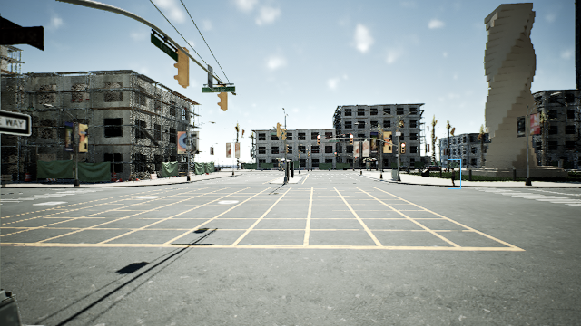
LiDAR body-support candidates Actor Decision Class Center x / y (m) Support Review note 86 ignore person 28.25 / -15.01 0 Visible pedestrian body and legs; RGB inspected at enlarged scale.
All exclusions 88 person: outside_60m_range 86 person: insufficient_lidar_body_support 53 car: outside_60m_range 54 car: outside_60m_range 55 car: center_outside_front_image 56 car: outside_60m_range 57 truck: class_not_evaluated 58 truck: class_not_evaluated 59 truck: class_not_evaluated 60 car: outside_60m_range 61 car: outside_60m_range 84 person: center_outside_front_image 82 person: outside_60m_range 78 car: outside_60m_range 77 car: outside_60m_range 76 car: outside_60m_range 75 car: center_outside_front_image 74 car: center_outside_front_image 73 car: center_outside_front_image 72 car: outside_60m_range 71 car: outside_60m_range 70 car: outside_60m_range 69 motorcycle: class_not_evaluated 68 car: outside_60m_range 67 truck: class_not_evaluated 66 car: outside_60m_range 65 car: outside_60m_range 64 car: outside_60m_range 63 car: outside_60m_range 62 car: center_outside_front_image driving_12s — 0 eligible Stamp: 32025120824 ns; CARLA frame 727. Original RGB
Full pedestrian body visible on the right sidewalk.
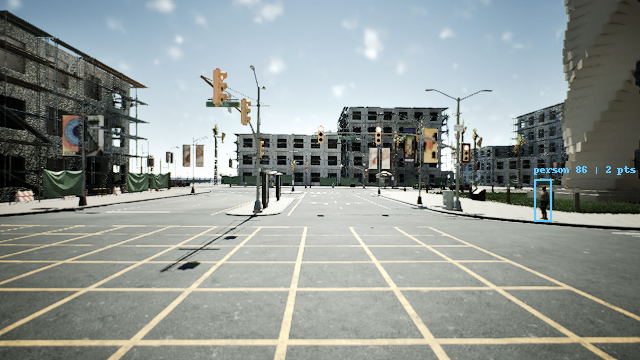
Visibility decisions 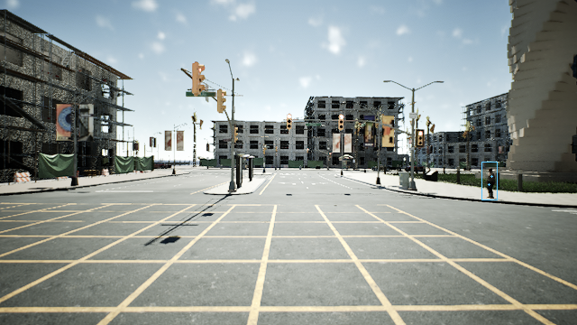
LiDAR body-support candidates Actor Decision Class Center x / y (m) Support Review note 86 ignore person 18.79 / -12.07 2 Visible pedestrian body and legs; RGB inspected at enlarged scale.
All exclusions 88 person: outside_60m_range 86 person: insufficient_lidar_body_support 53 car: outside_60m_range 54 car: outside_60m_range 55 car: center_outside_front_image 56 car: outside_60m_range 57 truck: class_not_evaluated 58 truck: class_not_evaluated 59 truck: class_not_evaluated 60 car: outside_60m_range 61 car: outside_60m_range 84 person: center_outside_front_image 82 person: outside_60m_range 78 car: outside_60m_range 77 car: outside_60m_range 76 car: outside_60m_range 75 car: outside_60m_range 74 car: center_outside_front_image 73 car: center_outside_front_image 72 car: outside_60m_range 71 car: outside_60m_range 70 car: outside_60m_range 69 motorcycle: class_not_evaluated 68 car: outside_60m_range 67 truck: class_not_evaluated 66 car: outside_60m_range 65 car: outside_60m_range 64 car: outside_60m_range 63 car: outside_60m_range 62 car: center_outside_front_image driving_12.5s — 1 eligible Stamp: 32525120831 ns; CARLA frame 737. Original RGB
Pedestrian is closer and fully visible near the right image edge.
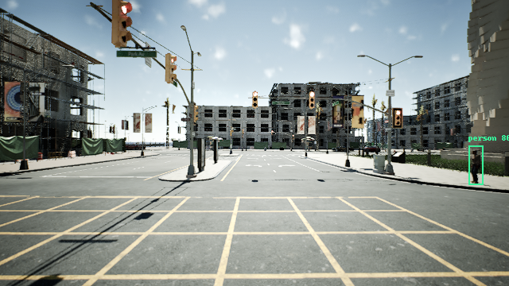
Visibility decisions 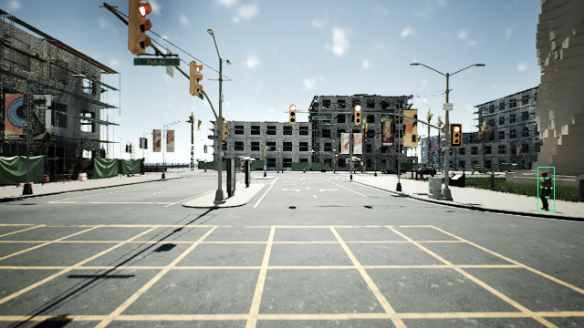
LiDAR body-support candidates Actor Decision Class Center x / y (m) Support Review note 86 eligible person 15.36 / -12.00 8 Visible pedestrian body and legs; RGB inspected at enlarged scale.
All exclusions 88 person: outside_60m_range 53 car: outside_60m_range 54 car: outside_60m_range 55 car: center_outside_front_image 56 car: outside_60m_range 57 truck: class_not_evaluated 58 truck: class_not_evaluated 59 truck: class_not_evaluated 60 car: outside_60m_range 61 car: outside_60m_range 84 person: center_outside_front_image 82 person: outside_60m_range 78 car: outside_60m_range 77 car: outside_60m_range 76 car: outside_60m_range 75 car: outside_60m_range 74 car: center_outside_front_image 73 car: center_outside_front_image 72 car: outside_60m_range 71 car: outside_60m_range 70 car: outside_60m_range 69 motorcycle: class_not_evaluated 68 car: outside_60m_range 67 truck: class_not_evaluated 66 car: outside_60m_range 65 car: outside_60m_range 64 car: outside_60m_range 63 car: outside_60m_range 62 car: center_outside_front_image driving_13s — 0 eligible Stamp: 33025120839 ns; CARLA frame 747. Original RGB
No in-scope car or person with a center in the front image. Other classes, distant actors and passed image-edge fragments are excluded.
Visibility decisions 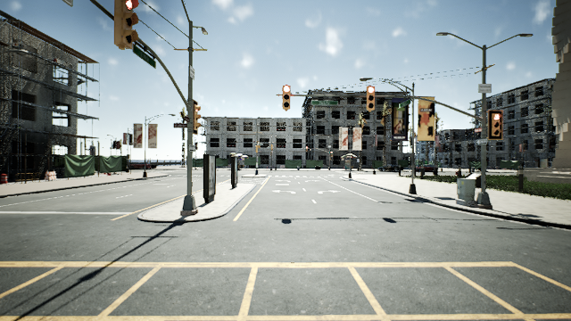
LiDAR body-support candidates Actor Decision Class Center x / y (m) Support Review note
All exclusions 88 person: outside_60m_range 86 person: center_outside_front_image 53 car: outside_60m_range 54 car: outside_60m_range 55 car: outside_60m_range 56 car: outside_60m_range 57 truck: class_not_evaluated 58 truck: class_not_evaluated 59 truck: class_not_evaluated 60 car: outside_60m_range 61 car: outside_60m_range 84 person: center_outside_front_image 82 person: outside_60m_range 78 car: outside_60m_range 77 car: outside_60m_range 76 car: outside_60m_range 75 car: outside_60m_range 74 car: center_outside_front_image 73 car: center_outside_front_image 72 car: outside_60m_range 71 car: outside_60m_range 70 car: outside_60m_range 69 motorcycle: class_not_evaluated 68 car: outside_60m_range 67 truck: class_not_evaluated 66 car: outside_60m_range 65 car: outside_60m_range 64 car: outside_60m_range 63 car: outside_60m_range 62 car: center_outside_front_image driving_13.5s — 0 eligible Stamp: 33525120846 ns; CARLA frame 757. Original RGB
No in-scope car or person with a center in the front image. Other classes, distant actors and passed image-edge fragments are excluded.
Visibility decisions 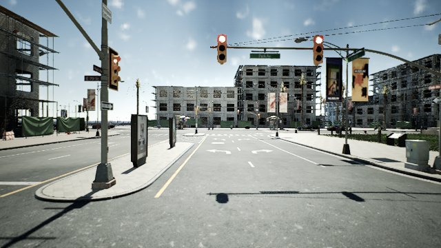
LiDAR body-support candidates Actor Decision Class Center x / y (m) Support Review note
All exclusions 88 person: outside_60m_range 86 person: center_outside_front_image 53 car: outside_60m_range 54 car: outside_60m_range 55 car: outside_60m_range 56 car: outside_60m_range 57 truck: class_not_evaluated 58 truck: class_not_evaluated 59 truck: class_not_evaluated 60 car: outside_60m_range 61 car: outside_60m_range 84 person: center_outside_front_image 82 person: outside_60m_range 78 car: outside_60m_range 77 car: outside_60m_range 76 car: outside_60m_range 75 car: outside_60m_range 74 car: center_outside_front_image 73 car: center_outside_front_image 72 car: outside_60m_range 71 car: outside_60m_range 70 car: outside_60m_range 69 motorcycle: class_not_evaluated 68 car: outside_60m_range 67 truck: class_not_evaluated 66 car: outside_60m_range 65 car: outside_60m_range 64 car: outside_60m_range 63 car: outside_60m_range 62 car: center_outside_front_image driving_14s — 0 eligible Stamp: 34025120854 ns; CARLA frame 767. Original RGB
No in-scope car or person with a center in the front image. Other classes, distant actors and passed image-edge fragments are excluded.
Visibility decisions 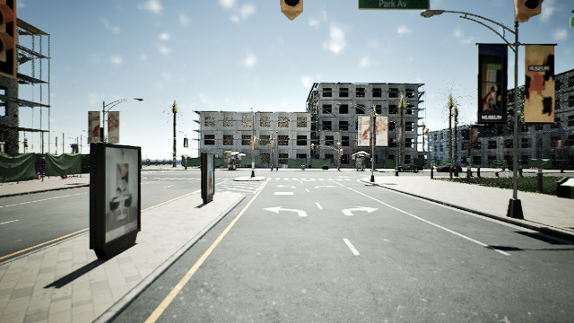
LiDAR body-support candidates Actor Decision Class Center x / y (m) Support Review note
All exclusions 88 person: outside_60m_range 86 person: center_outside_front_image 53 car: outside_60m_range 54 car: outside_60m_range 55 car: outside_60m_range 56 car: outside_60m_range 57 truck: class_not_evaluated 58 truck: class_not_evaluated 59 truck: class_not_evaluated 60 car: outside_60m_range 61 car: outside_60m_range 84 person: center_outside_front_image 82 person: outside_60m_range 78 car: outside_60m_range 77 car: outside_60m_range 76 car: outside_60m_range 75 car: outside_60m_range 74 car: outside_60m_range 73 car: center_outside_front_image 72 car: outside_60m_range 71 car: outside_60m_range 70 car: outside_60m_range 69 motorcycle: class_not_evaluated 68 car: outside_60m_range 67 truck: class_not_evaluated 66 car: outside_60m_range 65 car: outside_60m_range 64 car: outside_60m_range 63 car: outside_60m_range 62 car: center_outside_front_image driving_16s — 3 eligible Stamp: 36025120883 ns; CARLA frame 807. Original RGB
Three parked cars across the intersection; identity and visibility checked in enlarged crops.
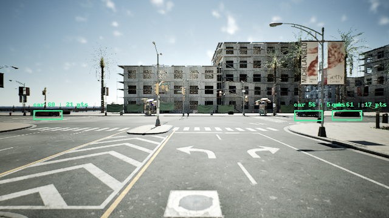
Visibility decisions 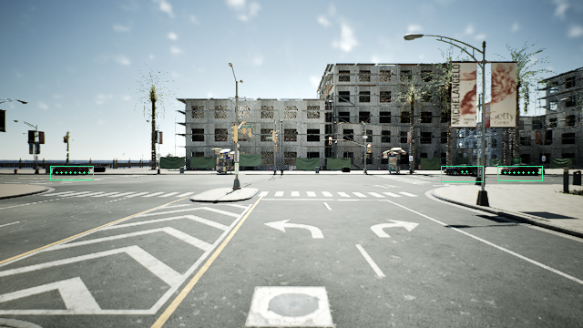
LiDAR body-support candidates Actor Decision Class Center x / y (m) Support Review note 56 eligible car 43.68 / -24.61 5 Visible car body; RGB shape and CARLA identity checked. 60 eligible car 44.70 / 32.63 21 Visible car body; RGB shape and CARLA identity checked. 61 eligible car 43.89 / -33.10 17 Visible car body; RGB shape and CARLA identity checked.
All exclusions 88 person: outside_60m_range 86 person: center_outside_front_image 53 car: outside_60m_range 54 car: outside_60m_range 55 car: outside_60m_range 57 truck: class_not_evaluated 58 truck: class_not_evaluated 59 truck: class_not_evaluated 84 person: center_outside_front_image 82 person: outside_60m_range 78 car: outside_60m_range 77 car: outside_60m_range 76 car: outside_60m_range 75 car: outside_60m_range 74 car: outside_60m_range 73 car: center_outside_front_image 72 car: outside_60m_range 71 car: outside_60m_range 70 car: outside_60m_range 69 motorcycle: class_not_evaluated 68 car: outside_60m_range 67 truck: class_not_evaluated 66 car: outside_60m_range 65 car: outside_60m_range 64 car: outside_60m_range 63 car: outside_60m_range 62 car: outside_60m_range driving_18s — 1 eligible Stamp: 38025120913 ns; CARLA frame 847. Original RGB
Clear side/front of the parked black car across the intersection.
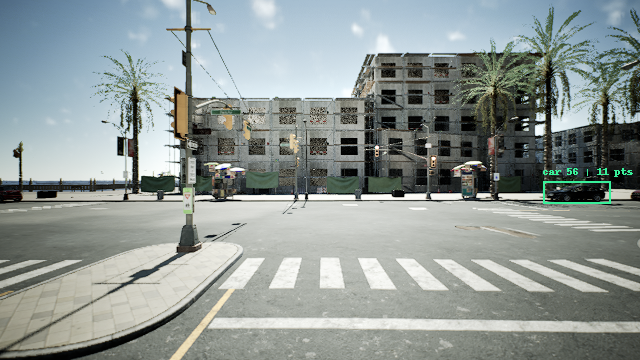
Visibility decisions 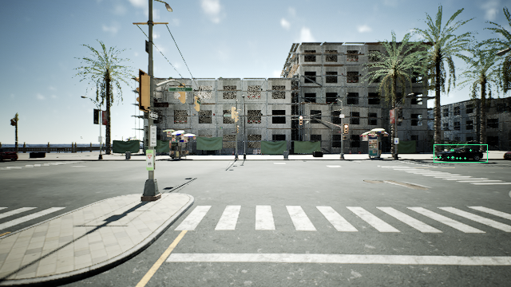
LiDAR body-support candidates Actor Decision Class Center x / y (m) Support Review note 56 eligible car 32.40 / -24.64 11 Visible car body; RGB shape and CARLA identity checked.
All exclusions 88 person: outside_60m_range 86 person: center_outside_front_image 53 car: outside_60m_range 54 car: outside_60m_range 55 car: outside_60m_range 57 truck: class_not_evaluated 58 truck: class_not_evaluated 59 truck: class_not_evaluated 60 car: center_outside_front_image 61 car: center_outside_front_image 84 person: outside_60m_range 82 person: outside_60m_range 78 car: center_outside_front_image 77 car: outside_60m_range 76 car: outside_60m_range 75 car: outside_60m_range 74 car: outside_60m_range 73 car: center_outside_front_image 72 car: outside_60m_range 71 car: outside_60m_range 70 car: outside_60m_range 69 motorcycle: class_not_evaluated 68 car: outside_60m_range 67 truck: class_not_evaluated 66 car: outside_60m_range 65 car: outside_60m_range 64 car: outside_60m_range 63 car: outside_60m_range 62 car: outside_60m_range driving_20s — 0 eligible Stamp: 40025120943 ns; CARLA frame 887. Original RGB
No in-scope car or person with a center in the front image. Other classes, distant actors and passed image-edge fragments are excluded.
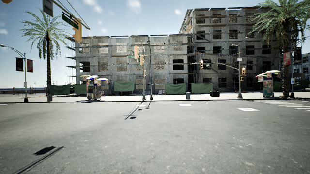
Visibility decisions LiDAR body-support candidates Actor Decision Class Center x / y (m) Support Review note
All exclusions 88 person: outside_60m_range 86 person: center_outside_front_image 53 car: outside_60m_range 54 car: outside_60m_range 55 car: outside_60m_range 56 car: center_outside_front_image 57 truck: class_not_evaluated 58 truck: class_not_evaluated 59 truck: class_not_evaluated 60 car: center_outside_front_image 61 car: center_outside_front_image 84 person: outside_60m_range 82 person: outside_60m_range 78 car: center_outside_front_image 77 car: outside_60m_range 76 car: outside_60m_range 75 car: outside_60m_range 74 car: outside_60m_range 73 car: outside_60m_range 72 car: outside_60m_range 71 car: outside_60m_range 70 car: outside_60m_range 69 motorcycle: class_not_evaluated 68 car: outside_60m_range 67 truck: class_not_evaluated 66 car: outside_60m_range 65 car: outside_60m_range 64 car: outside_60m_range 63 car: outside_60m_range 62 car: outside_60m_range driving_24s — 2 eligible Stamp: 44025121003 ns; CARLA frame 967. Original RGB
Two right-side parked cars; close red car is clipped but a substantial body region is visible. Small distant pedestrian on left sidewalk.
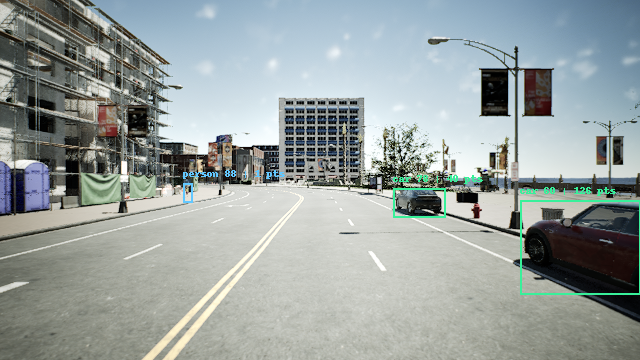
Visibility decisions 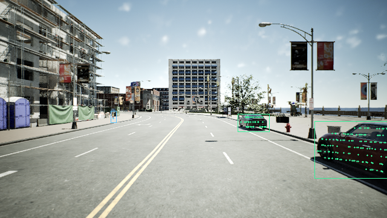
LiDAR body-support candidates Actor Decision Class Center x / y (m) Support Review note 60 eligible car 8.01 / -6.35 126 Visible car body; RGB shape and CARLA identity checked. 78 eligible car 22.28 / -6.29 40 Visible car body; RGB shape and CARLA identity checked. 88 ignore person 36.91 / 14.67 1 Visible pedestrian body and legs; RGB inspected at enlarged scale.
All exclusions 88 person: insufficient_lidar_body_support 86 person: center_outside_front_image 53 car: outside_60m_range 54 car: outside_60m_range 55 car: outside_60m_range 56 car: center_outside_front_image 57 truck: class_not_evaluated 58 truck: class_not_evaluated 59 truck: class_not_evaluated 61 car: center_outside_front_image 84 person: outside_60m_range 82 person: outside_60m_range 77 car: outside_60m_range 76 car: outside_60m_range 75 car: outside_60m_range 74 car: outside_60m_range 73 car: outside_60m_range 72 car: outside_60m_range 71 car: outside_60m_range 70 car: outside_60m_range 69 motorcycle: class_not_evaluated 68 car: outside_60m_range 67 truck: class_not_evaluated 66 car: outside_60m_range 65 car: outside_60m_range 64 car: outside_60m_range 63 car: outside_60m_range 62 car: outside_60m_range driving_28s — 0 eligible Stamp: 48025121062 ns; CARLA frame 1047. Original RGB
No in-scope car or person with a center in the front image. Other classes, distant actors and passed image-edge fragments are excluded.
Visibility decisions 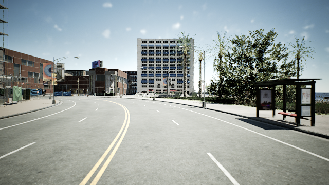
LiDAR body-support candidates Actor Decision Class Center x / y (m) Support Review note
All exclusions 88 person: center_outside_front_image 86 person: outside_60m_range 53 car: outside_60m_range 54 car: outside_60m_range 55 car: outside_60m_range 56 car: outside_60m_range 57 truck: class_not_evaluated 58 truck: class_not_evaluated 59 truck: class_not_evaluated 60 car: center_outside_front_image 61 car: outside_60m_range 84 person: outside_60m_range 82 person: outside_60m_range 78 car: center_outside_front_image 77 car: outside_60m_range 76 car: outside_60m_range 75 car: outside_60m_range 74 car: outside_60m_range 73 car: outside_60m_range 72 car: outside_60m_range 71 car: outside_60m_range 70 car: outside_60m_range 69 motorcycle: class_not_evaluated 68 car: outside_60m_range 67 truck: class_not_evaluated 66 car: outside_60m_range 65 car: outside_60m_range 64 car: outside_60m_range 63 car: outside_60m_range 62 car: outside_60m_range driving_32s — 0 eligible Stamp: 52025121122 ns; CARLA frame 1127. Original RGB
No in-scope car or person with a center in the front image. Other classes, distant actors and passed image-edge fragments are excluded.
Visibility decisions 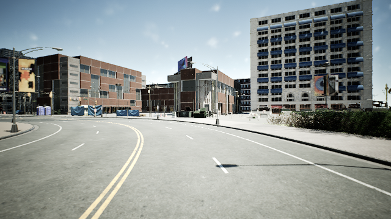
LiDAR body-support candidates Actor Decision Class Center x / y (m) Support Review note
All exclusions 88 person: center_outside_front_image 86 person: outside_60m_range 53 car: outside_60m_range 54 car: outside_60m_range 55 car: outside_60m_range 56 car: outside_60m_range 57 truck: class_not_evaluated 58 truck: class_not_evaluated 59 truck: class_not_evaluated 60 car: center_outside_front_image 61 car: outside_60m_range 84 person: outside_60m_range 82 person: outside_60m_range 78 car: center_outside_front_image 77 car: outside_60m_range 76 car: center_outside_front_image 75 car: outside_60m_range 74 car: outside_60m_range 73 car: outside_60m_range 72 car: outside_60m_range 71 car: outside_60m_range 70 car: outside_60m_range 69 motorcycle: class_not_evaluated 68 car: outside_60m_range 67 truck: class_not_evaluated 66 car: outside_60m_range 65 car: outside_60m_range 64 car: outside_60m_range 63 car: outside_60m_range 62 car: outside_60m_range driving_36s — 0 eligible Stamp: 56025121181 ns; CARLA frame 1207. Original RGB
No in-scope car or person with a center in the front image. Other classes, distant actors and passed image-edge fragments are excluded.
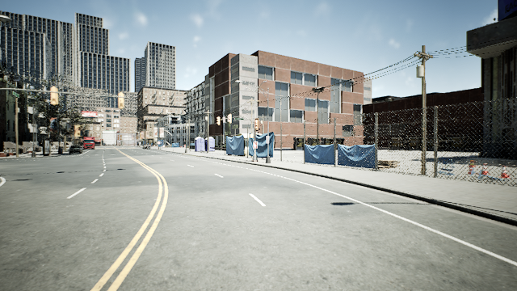
Visibility decisions LiDAR body-support candidates Actor Decision Class Center x / y (m) Support Review note
All exclusions 88 person: center_outside_front_image 86 person: outside_60m_range 53 car: outside_60m_range 54 car: outside_60m_range 55 car: outside_60m_range 56 car: outside_60m_range 57 truck: class_not_evaluated 58 truck: class_not_evaluated 59 truck: class_not_evaluated 60 car: outside_60m_range 61 car: outside_60m_range 84 person: outside_60m_range 82 person: outside_60m_range 78 car: outside_60m_range 77 car: outside_60m_range 76 car: center_outside_front_image 75 car: outside_60m_range 74 car: outside_60m_range 73 car: outside_60m_range 72 car: outside_60m_range 71 car: outside_60m_range 70 car: outside_60m_range 69 motorcycle: class_not_evaluated 68 car: outside_60m_range 67 truck: class_not_evaluated 66 car: outside_60m_range 65 car: outside_60m_range 64 car: outside_60m_range 63 car: outside_60m_range 62 car: outside_60m_range driving_40s — 1 eligible Stamp: 60025121241 ns; CARLA frame 1287. Original RGB
Parked car ahead on left, checked in enlarged RGB.
Visibility decisions 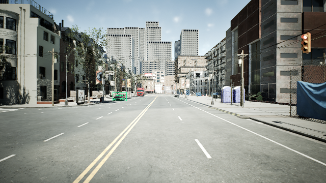
LiDAR body-support candidates Actor Decision Class Center x / y (m) Support Review note 68 eligible car 41.87 / 10.76 19 Visible car body; RGB shape and CARLA identity checked.
All exclusions 88 person: outside_60m_range 86 person: outside_60m_range 53 car: outside_60m_range 54 car: outside_60m_range 55 car: outside_60m_range 56 car: outside_60m_range 57 truck: class_not_evaluated 58 truck: class_not_evaluated 59 truck: class_not_evaluated 60 car: outside_60m_range 61 car: outside_60m_range 84 person: outside_60m_range 82 person: outside_60m_range 78 car: outside_60m_range 77 car: outside_60m_range 76 car: center_outside_front_image 75 car: outside_60m_range 74 car: outside_60m_range 73 car: outside_60m_range 72 car: outside_60m_range 71 car: outside_60m_range 70 car: outside_60m_range 69 motorcycle: class_not_evaluated 67 truck: class_not_evaluated 66 car: outside_60m_range 65 car: outside_60m_range 64 car: outside_60m_range 63 car: outside_60m_range 62 car: outside_60m_range driving_44s — 1 eligible Stamp: 64025121301 ns; CARLA frame 1367. Original RGB
Close left car is clipped but clearly visible; distant right car is partly overlapped by a motorcycle, a non-evaluated class.
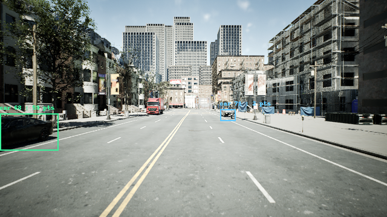
Visibility decisions 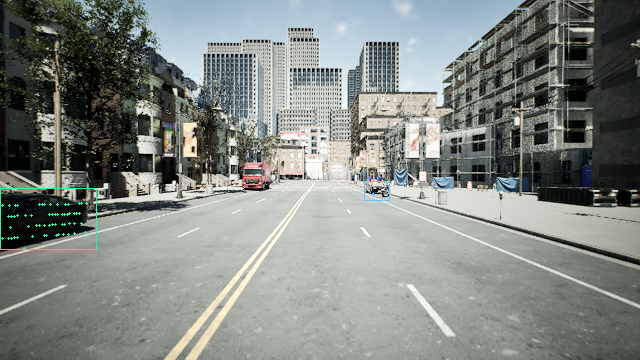
LiDAR body-support candidates Actor Decision Class Center x / y (m) Support Review note 68 eligible car 11.96 / 10.04 59 Visible car body; RGB shape and CARLA identity checked. 71 ignore car 40.51 / -6.76 2 Visible car body; RGB shape and CARLA identity checked.
All exclusions 88 person: outside_60m_range 86 person: outside_60m_range 53 car: outside_60m_range 54 car: outside_60m_range 55 car: outside_60m_range 56 car: outside_60m_range 57 truck: class_not_evaluated 58 truck: class_not_evaluated 59 truck: class_not_evaluated 60 car: outside_60m_range 61 car: outside_60m_range 84 person: outside_60m_range 82 person: outside_60m_range 78 car: outside_60m_range 77 car: outside_60m_range 76 car: center_outside_front_image 75 car: outside_60m_range 74 car: outside_60m_range 73 car: outside_60m_range 72 car: outside_60m_range 71 car: insufficient_lidar_body_support 70 car: outside_60m_range 69 motorcycle: class_not_evaluated 67 truck: class_not_evaluated 66 car: outside_60m_range 65 car: outside_60m_range 64 car: outside_60m_range 63 car: outside_60m_range 62 car: outside_60m_range driving_48s — 0 eligible Stamp: 68025121360 ns; CARLA frame 1447. Original RGB
No in-scope car or person with a center in the front image. Other classes, distant actors and passed image-edge fragments are excluded.
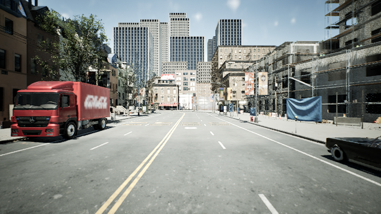
Visibility decisions LiDAR body-support candidates Actor Decision Class Center x / y (m) Support Review note
All exclusions 88 person: outside_60m_range 86 person: outside_60m_range 53 car: outside_60m_range 54 car: outside_60m_range 55 car: outside_60m_range 56 car: outside_60m_range 57 truck: class_not_evaluated 58 truck: class_not_evaluated 59 truck: class_not_evaluated 60 car: outside_60m_range 61 car: outside_60m_range 84 person: outside_60m_range 82 person: outside_60m_range 78 car: outside_60m_range 77 car: outside_60m_range 76 car: outside_60m_range 75 car: outside_60m_range 74 car: outside_60m_range 73 car: outside_60m_range 72 car: outside_60m_range 71 car: center_outside_front_image 70 car: outside_60m_range 69 motorcycle: class_not_evaluated 68 car: center_outside_front_image 67 truck: class_not_evaluated 66 car: outside_60m_range 65 car: outside_60m_range 64 car: outside_60m_range 63 car: outside_60m_range 62 car: outside_60m_range driving_52s — 0 eligible Stamp: 72025121420 ns; CARLA frame 1527. Original RGB
No in-scope car or person with a center in the front image. Other classes, distant actors and passed image-edge fragments are excluded.
Visibility decisions 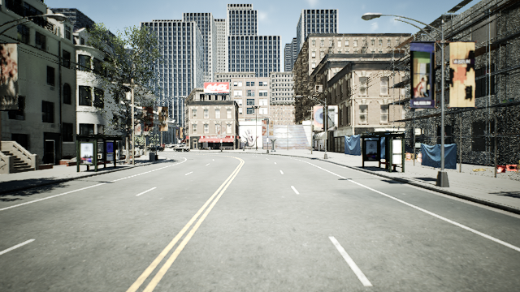
LiDAR body-support candidates Actor Decision Class Center x / y (m) Support Review note
All exclusions 88 person: outside_60m_range 86 person: outside_60m_range 53 car: outside_60m_range 54 car: outside_60m_range 55 car: outside_60m_range 56 car: outside_60m_range 57 truck: class_not_evaluated 58 truck: class_not_evaluated 59 truck: class_not_evaluated 60 car: outside_60m_range 61 car: outside_60m_range 84 person: outside_60m_range 82 person: outside_60m_range 78 car: outside_60m_range 77 car: outside_60m_range 76 car: outside_60m_range 75 car: outside_60m_range 74 car: outside_60m_range 73 car: outside_60m_range 72 car: outside_60m_range 71 car: center_outside_front_image 70 car: outside_60m_range 69 motorcycle: class_not_evaluated 68 car: center_outside_front_image 67 truck: class_not_evaluated 66 car: outside_60m_range 65 car: outside_60m_range 64 car: outside_60m_range 63 car: outside_60m_range 62 car: outside_60m_range driving_56s — 1 eligible Stamp: 76025121479 ns; CARLA frame 1607. Original RGB
Two parked cars ahead, both identifiable in enlarged RGB.
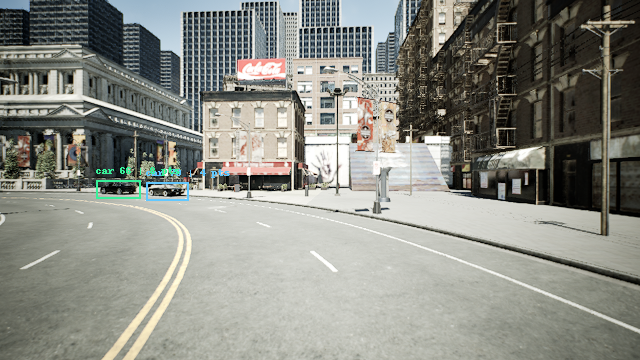
Visibility decisions 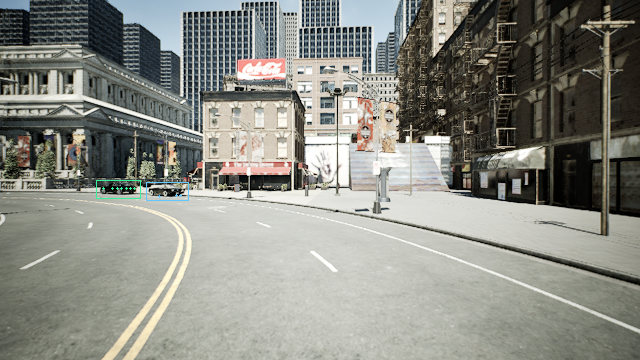
LiDAR body-support candidates Actor Decision Class Center x / y (m) Support Review note 66 eligible car 42.05 / 25.57 8 Visible car body; RGB shape and CARLA identity checked. 70 ignore car 38.64 / 17.86 4 Visible car body; RGB shape and CARLA identity checked.
All exclusions 88 person: outside_60m_range 86 person: outside_60m_range 53 car: outside_60m_range 54 car: outside_60m_range 55 car: outside_60m_range 56 car: outside_60m_range 57 truck: class_not_evaluated 58 truck: class_not_evaluated 59 truck: class_not_evaluated 60 car: outside_60m_range 61 car: outside_60m_range 84 person: outside_60m_range 82 person: outside_60m_range 78 car: outside_60m_range 77 car: outside_60m_range 76 car: outside_60m_range 75 car: outside_60m_range 74 car: outside_60m_range 73 car: outside_60m_range 72 car: outside_60m_range 71 car: center_outside_front_image 70 car: insufficient_lidar_body_support 69 motorcycle: class_not_evaluated 68 car: outside_60m_range 67 truck: class_not_evaluated 65 car: outside_60m_range 64 car: outside_60m_range 63 car: outside_60m_range 62 car: outside_60m_range driving_60s — 2 eligible Stamp: 80025121539 ns; CARLA frame 1687. Original RGB
Two clear right-side parked cars; nearest car has partial right-edge clipping.
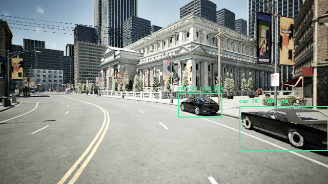
Visibility decisions 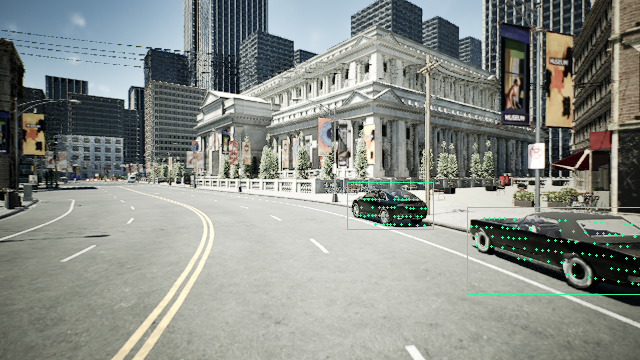
LiDAR body-support candidates Actor Decision Class Center x / y (m) Support Review note 70 eligible car 9.05 / -5.60 109 Visible car body; RGB shape and CARLA identity checked. 66 eligible car 17.12 / -3.18 61 Visible car body; RGB shape and CARLA identity checked.
All exclusions 88 person: outside_60m_range 86 person: outside_60m_range 53 car: outside_60m_range 54 car: outside_60m_range 55 car: outside_60m_range 56 car: outside_60m_range 57 truck: class_not_evaluated 58 truck: class_not_evaluated 59 truck: class_not_evaluated 60 car: outside_60m_range 61 car: outside_60m_range 84 person: outside_60m_range 82 person: outside_60m_range 78 car: outside_60m_range 77 car: outside_60m_range 76 car: outside_60m_range 75 car: outside_60m_range 74 car: outside_60m_range 73 car: outside_60m_range 72 car: outside_60m_range 71 car: outside_60m_range 69 motorcycle: class_not_evaluated 68 car: outside_60m_range 67 truck: class_not_evaluated 65 car: outside_60m_range 64 car: outside_60m_range 63 car: outside_60m_range 62 car: outside_60m_range